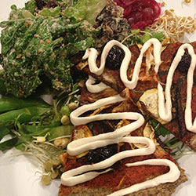

Green Juice
Learn a medicinal raw program based on the Ann Wigmore protocol. Repair cells and detox your body. Learn to make green juice and wheatgrass drinks at home.

Gourmet Raw Meals
How to shop, equipment training and recipes teach you to cook delicious raw meals at home.

Advanced Training
Classes like Wild Edibles and Herbs will deepen your knowledge and understanding. Take your raw food lifestyle to the next level.